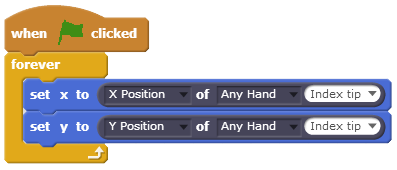

Welcome Scratchers
Intel® RealSense™ Extension for Scratch introduces these amazing capabilities: hands tracking, gesture recognition, face tracking, face expressions and voice commands - all made simple with just a few Scratch blocks.
Scratch is a project of the Lifelong Kindergarten group of the MIT Media Lab
Setting Up
Get a Camera
Make sure you have an Intel® RealSense™ F200 camera
1
Download Plug-in
Download the Intel® RealSense™ Web Runtime plug-in
Make sure there is an adult with you to install the plug-in
2
Go to ScratchX
Open the extension in ScratchX
3
 Privacy Notice: Even though Intel® RealSense™ Extension for Scratch uses a camera, no images are captured, stored or sent to the cloud.
Privacy Notice: Even though Intel® RealSense™ Extension for Scratch uses a camera, no images are captured, stored or sent to the cloud.
Scratch Blocks
Face
Returns true if face is visible
Returns the position of the selected face landmark in selected axis
Returns true if the selected face expression is detected
Returns the rotation of the head between 0 to 180
Hands
Returns true if the selected hand is visible
Returns the position of the selected joint in selected hand in selected axis
Returns true if the selected gesture is detected on selected hand
Returns the foldedness amount of the selected finger of selected hand
Samples
Everything you need to know
Experiment with different capabilities by switching the green flag between the blocks
Simple Hand
Shows a hand skeleton that tracks the major joints of the hand
Full Hand
Tracks the entire set of 22 joints of the hand
Simple Face
Track the major landmarks of the face
Full Face
Track the entire set of face landmarks
Ping Pong
A simple hand tracking game
Getting Started
To make the Scratch cat follow your index finger around:
- Choose Cat1 from the Sprite library
- Drag the Green Flag event and connect a “forever” loop
- From Motion, drag “set x to” and “set y to” blocks into the loop
- Go to More Blocks and drag a hand position block into each “set” block
- Set the position axis of each hand tracking block to the corresponding axis of the set block
- Make sure both tracking blocks are following the same hand and joint
- Press the green flag
- Present the appropriate hand to the camera, palm facing forward, fingers facing upwards, and move your hand around, the cat should be following your hand